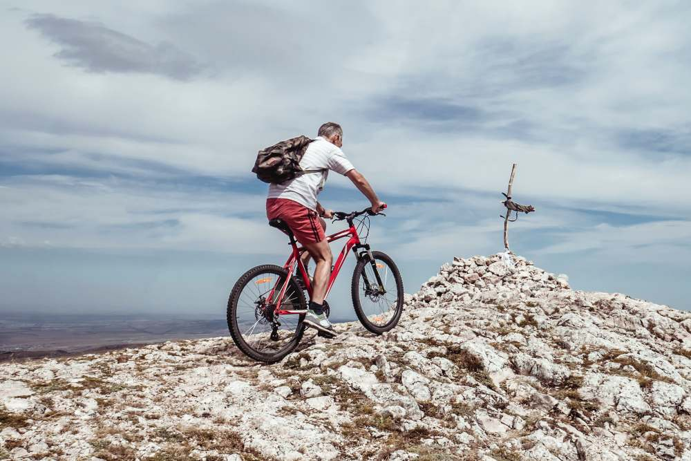

In de categorie kinderfietsen liggen de maten het verst uit elkaar van allemaal. Ze variëren van heel klein tot redelijk groot waarna ze evolueren naar een heren- of damesfiets. Voor de beginnende fietserstjes is er bij de kleinste fietsen nog een mogelijkheid voor zijwieltjes voorzien voor extra stabiliteit. Ook om het fietsen iets gemakkelijker te maken is er bij sommige kinderfietsen en mogelijkheid om te remmen wanneer je achteruit trapt.
Wanneer je een fiets tekent of in gedachten neemt zal dit vaak een herenfiets zijn. De meest standaard vorm voor een fiets. Een diamantframe die alle onderdelen bij elkaar houdt is tegenwoordig de meest voorkomende vorm. Dit was daarentegen niet altijd het geval. Maten van herenfietsen liggen niet heel ver uit elkaar maar er zijn wel maten die zullen voldoen aan uw grootte.
De damesfiets is een aangepaste versie van de herenfiets. Het diamantframe had een buis aan de bovenkant maar bij een damesfiets is deze verlaagt voor een grotere instap. Veel handiger als je bijvoorbeeld met een rok moet opstappen. Het draagt de naam damesfiets, ook al zijn er veel mannen die een vrouwenfiets verkiezen door deze extra handigheid.
Een racefiets wordt gebruikt voor wielrennen en focust zich vooral op de aerodynamica. Hierdoor zijn racefietsen iets kleiner (of hebben een kleiner frame) dan gewone heren/damesfietsen. Toch staat het zadel vaak veel hoger voor extra aerodynamica. Racefietsen zijn doorgaans gemaakt van lichte materialen zoals carbon en hebben veel dunnere banden. Dit alles maakt het gemakkelijker om met hoge snelheden te fietsen.
Mountainbikes worden vooral off-road gebruikt. Als je iemand bent die niet van plan is zich aan de gewone fietspaden te houden is dit de fiets voor jou. Mountainbikes zijn doorgaans iets kleiner dan de gewone heren/damesfiets en hebben bredere banden met veel meer grip. Dit natuurlijk om beter te kunnen presteren op off-road terrein.
De BMX is een soort fiets dat voor veel doeleinden gebruikt wordt. Snelheidsparkour, freestyle, ... Voor elke discipline in het BMX’en is een andere soort BMX aangeraden. Van heel lichte, aerodynamische BMXen tot de meest getunede BMXen om mee te pronken op het skatepark bij het doen van waanzinnige tricks.